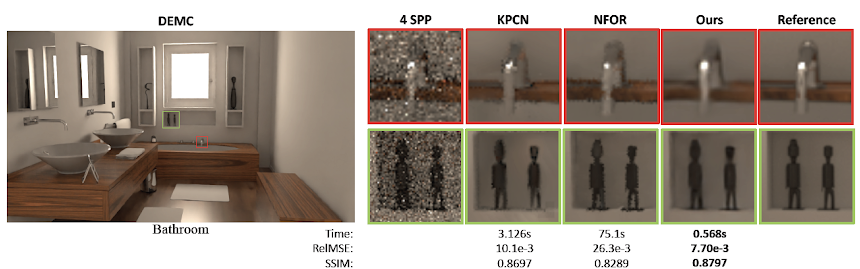

DEMC: A Deep Dual-Encoder Network for Denoising Monte Carlo Rendering, CVM2019.
Xin Yang, Wenbo Hu, Dawei Wang, Lijing Zhao, Baocai Yin, Qiang Zhang, Xiaopeng Wei, Hongbo Fu
[ Project]
[ Paper]
[ Bib ]
[ Dataset ]
[ Code (On the way) ]
Wenbo HU
Ph.D. Student
Dept of Computer Science & Engineering
The Chinese University of Hong Kong
About Me
I am a first year Ph.D. student in Department of Computer Science and Engineering, The Chinese University of
Hong Kong (CUHK),
supervised by Prof. Tien-Tsin WONG.
Before that I received my bachelor degree in Computer Science and Engineering from Dalian University
of Technology (DUT) in 2018,
supervised by Prof. Xin YANG.
My research interests include: Computer Graphics, Computer Vision and Deep Learning.
[XXXX-XX-XX]
Hello world!
Publications


Activities
- Hello World!
Contact
Email: wbhu@cse.cuhk.edu.hk.